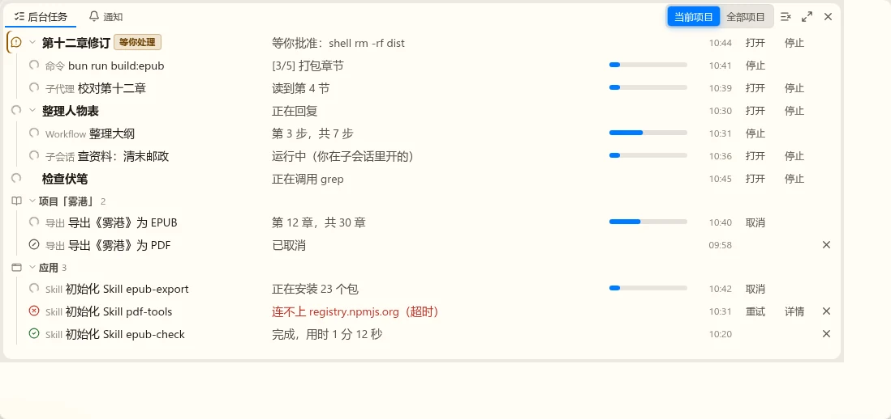
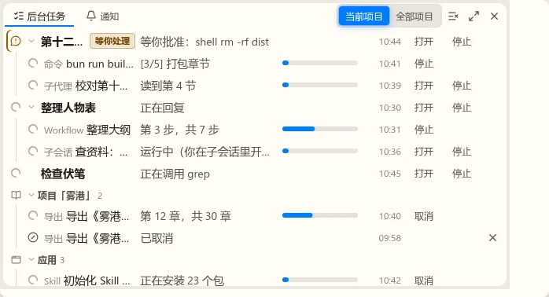
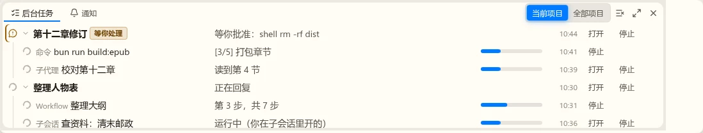
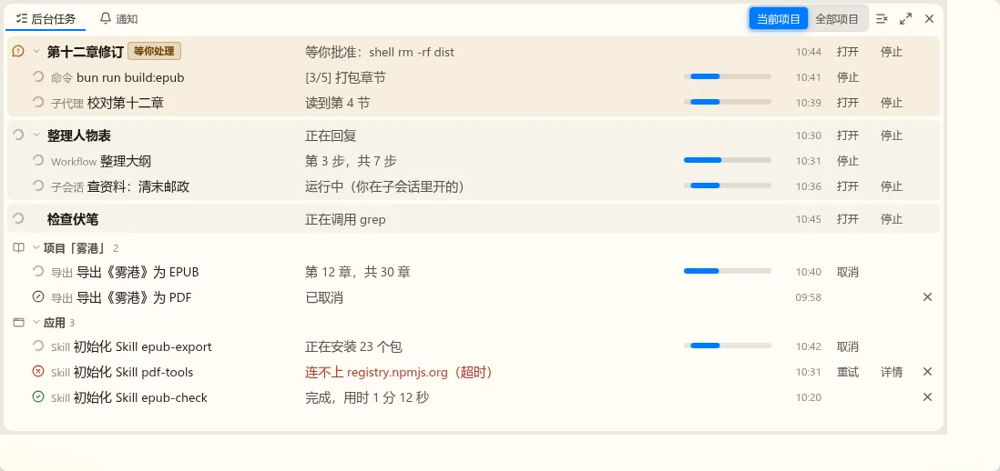
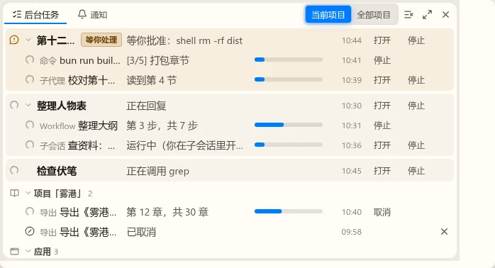
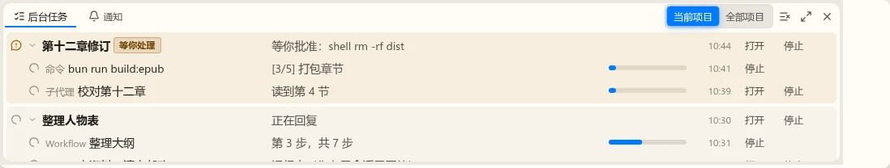
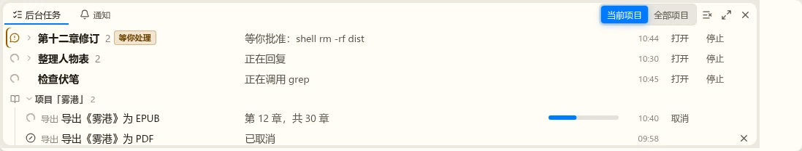
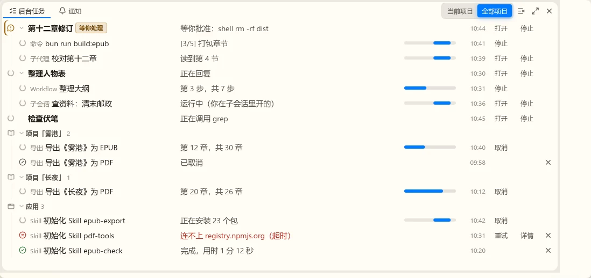

第 1 轮，两道题。范围与注意力排序在会话里已经定了（页底）。图里的数据是写死的样例；“会话”组里的行在实现时由 Agent 交出。
两种画法里，会话的组头都是这个会话自己：标题、“等你处理”的徽标、它此刻在做什么（“等你批准：……”“正在回复”）、开始时刻，以及“打开”“停止”（停它当前的运行、保留排队的话）。它的后台任务缩进在下面，每行前面一个淡色的种类（命令、子代理、Workflow、子会话）。项目与应用的组头只是一个小标题加件数。






推荐 A：底部面板在默认布局里只有约 196px 高，B 每块上下多出的留白让一屏少放约一行；A 靠加粗的组头、细竖线和等你处理的竖线已经分得清组。想要更醒目的分组就选 B。
会话排在最前，默认高度的面板里，几个会话展开之后，项目与应用的任务（例如 Skill 安装）要往下滚才看得到。每个组头都有收起箭头，问的是开始时的样子。

推荐默认展开，收起与展开按窗口记住：会话下面的就是这个会话的后台任务，收起之后要多点一下才看得到，分组也就失去了意义；嫌挤可以拉高面板或收起某一组。
